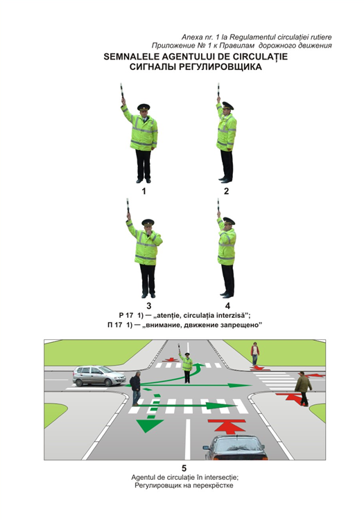
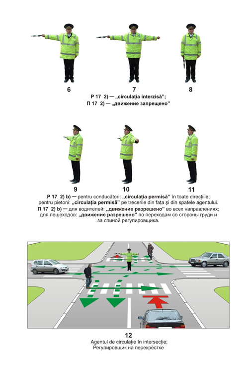
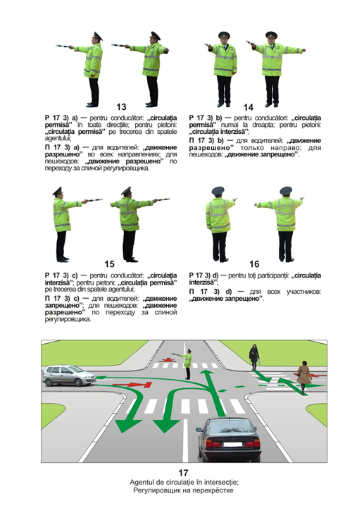
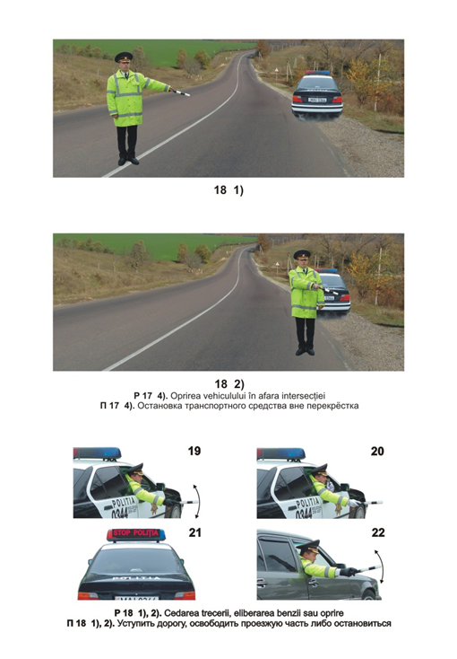

Сигналы регулировщика определяются положением его корпуса и рук. Они главнее светофора, знаков и разметки (п. 16 Правил). Ниже — официальные иллюстрации из приложения № 1 к ПДД и текст пунктов 17–18.
Иллюстрации




Что говорят Правила
17.Сигналы регулировщика определяются положением его корпуса и рук.
1) Регулировщик поднял руку вверх (рисунки 1-5).
Для всех приближающихся участников дорожного движения этот сигнал означает – «внимание, движение запрещено». Водители транспортных средств, въехавшие на перекресток, а также те, которые не могут остановиться, не прибегая к экстренному торможению в соответствии с пунктом 20 подпункт 1) настоящих Правил, и пешеходы, находящиеся на проезжей части, могут продолжить движение.
2) Регулировщик вытянул в сторону руку (руки), которая (которые) затем может (могут) быть опущена (опущены) (рисунки 6 – 12):
а) для всех участников дорожного движения, к которым регулировщик обращен грудью или спиной (рисунки 6-8) – «движение запрещено»;
b) для участников дорожного движения, к которым регулировщик обращен правым или левым боком (рисунки 9-11), этот сигнал означает:
для водителей транспортных средств – «движение разрешено» во всех направлениях согласно правилам проезда перекрестков;
для пешеходов – «движение разрешено» по пешеходным переходам, расположенным со стороны груди и за спиной регулировщика.
3) Регулировщик вытянул правую руку вперед, левая рука вытянута в сторону или опущена (рисунки 13-17):
а) для участников дорожного движения, к которым регулировщик обращен левым боком (рисунок 13), этот сигнал означает:
для водителей транспортных средств – «движение разрешено» во всех направлениях;
для пешеходов – «движение разрешено» только по пешеходному переходу, расположенному за спиной регулировщика;
b) для участников дорожного движения, к которым регулировщик обращен грудью (рисунок 14), этот сигнал означает:
для водителей транспортных средств – «движение разрешено» только направо;
для пешеходов – «движение запрещено»;
с) для участников дорожного движения, к которым регулировщик обращен правым боком (рисунок 15), этот сигнал означает:
для водителей транспортных средств – «движение запрещено»;
для пешеходов – «движение разрешено» только по пешеходному переходу, расположенному за спиной регулировщика;
d) для всех участников дорожного движения, к которым регулировщик обращен спиной (рисунок 16), – «движение запрещено».
4) Сигнал, выражающий требование об остановке транспортного средства вне перекрестка, подается жезлом, жестом руки или с помощью громкоговорящего устройства (рисунки 18 1), 18 2)). Водитель должен остановиться в месте, указанном регулировщиком.
5) Для привлечения внимания участников дорожного движения при подаче сигналов, указанных в настоящем пункте, регулировщик может использовать свисток.
6) Регулировщики, подающие сигналы участникам дорожного движения, должны быть экипированы и расположены таким образом, чтобы эти сигналы были видны и легко различимы днем, в темное время суток, а также в условиях недостаточной видимости.
18.1) Находясь в транспортном средстве дорожной полиции, которое сопровождает колонну, сигнал, выражающий требование уступить дорогу либо освободить проезжую часть для проезда этого транспортного средства и сопровождаемой им колонны, а также сигнал об остановке регулировщик подает другим транспортным средствам балансированием в вертикальной плоскости жезлом или горизонтально вытянутой рукой из окна автомобиля (рисунки 19, 20).
2) Сигнал, выражающий требование уступить дорогу транспортному средству с приоритетным режимом движения (сопровождаемой им колонне), а также сигнал об остановке может подаваться другим транспортным средствам с использованием специальных звуковых (сирена, громкоговорящее устройство) и световых (вращающийся или бегущий проблесковый маячок либо мигающая надпись «STOP POLIŢIA» или «STOP VAMA») сигналов, установленных на автомобиле (рисунок 21).
3) Если регулировщик выполняет неотложное служебное задание, находясь в попутном транспортном средстве, он подает сигнал, выражающий требование об остановке другим транспортным средствам, балансированием в вертикальной плоскости жезлом или горизонтально вытянутой рукой из окна автомобиля, либо с помощью громкоговорящего устройства (рисунок 22).
4) Регулировщик может подавать и другие сигналы, понятные всем участникам дорожного движения, к которым они обращены.
Сигналы светофоров (приложение № 2)
Пункты 17–18 в полном тексте главы III →
Учить Правила проще с преподавателем, который участвовал в их подготовке.
Записаться: 069 592 995